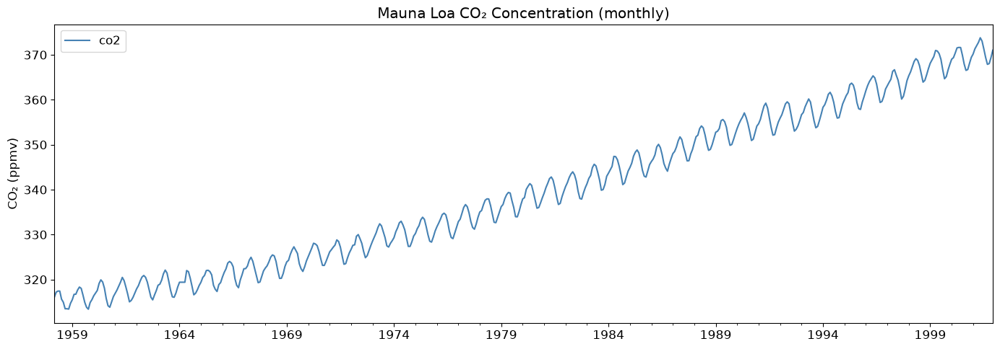
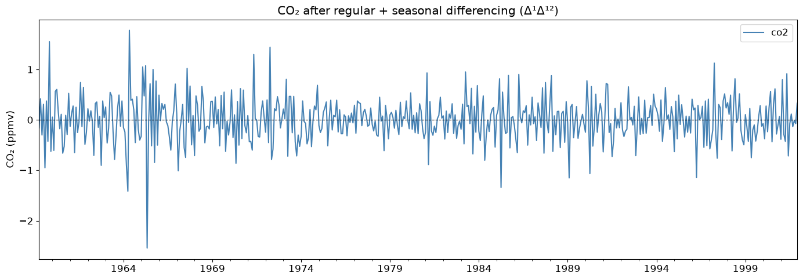
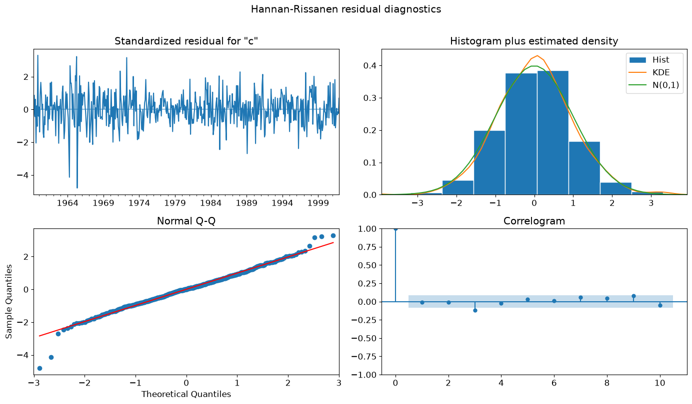

ARIMA with Seasonal Differencing Using Alternative Estimators¶
The ARIMA class supports several parameter estimation methods beyond the default statespace approach: hannan_rissanen, yule_walker, burg, and innovations. These methods are faster and do not require numerical optimisation, making them useful for quick estimation or as starting-value generators.
Previously, all four methods rejected any model with a non-zero seasonal period — even models whose only seasonal component is differencing (i.e. seasonal_order=(0, D, 0, s) with D > 0). This notebook demonstrates that they now correctly handle seasonal differencing while still raising a clear error for seasonal AR or MA terms.
[1]:
%matplotlib inline
[2]:
import warnings
import matplotlib.pyplot as plt
import pandas as pd
import statsmodels.api as sm
from statsmodels.tsa.arima.model import ARIMA
plt.rc("figure", figsize=(14, 5))
plt.rc("font", size=12)
warnings.filterwarnings("ignore")
Data: Mauna Loa Atmospheric CO₂¶
We use the classic Keeling Curve dataset, which records monthly mean atmospheric CO₂ concentrations (in parts per million by volume) measured at the Mauna Loa Observatory, Hawaii. The series exhibits two clear features:
A long-run upward trend driven by fossil-fuel emissions.
A strong annual seasonal cycle caused by Northern Hemisphere plant growth (CO₂ is drawn down each summer and rises each winter).
These features make the CO₂ series a natural candidate for a model with both regular and seasonal differencing.
[3]:
co2 = sm.datasets.co2.load_pandas().data
co2 = co2.resample("ME").mean().ffill() # resample to month-end, fill one gap
print(sm.datasets.co2.NOTE)
::
Number of observations: 2225
Number of variables: 2
Variable name definitions:
date - sample date in YYMMDD format
co2 - CO2 Concentration ppmv
The data returned by load_pandas contains the dates as the index.
[4]:
fig, ax = plt.subplots()
co2.plot(ax=ax, color="steelblue")
ax.set_title("Mauna Loa CO₂ Concentration (monthly)")
ax.set_ylabel("CO₂ (ppmv)")
ax.set_xlabel("")
plt.tight_layout()

Choosing a Model¶
A single seasonal difference (D=1, s=12) removes the annual seasonal pattern, and a single regular difference (d=1) removes the linear trend. After both differences the series is approximately stationary, so low-order AR and MA terms are sufficient.
We use ARIMA(1, 1, 1)(0, 1, 0, 12) as the main specification. For estimators that only support pure-AR models (yule_walker, burg) we use ARIMA(2, 0, 0)(0, 1, 0, 12) instead.
[5]:
co2_diff = co2.diff().diff(12).dropna()
fig, ax = plt.subplots()
co2_diff.plot(ax=ax, color="steelblue")
ax.set_title("CO₂ after regular + seasonal differencing (Δ¹Δ¹²)")
ax.set_ylabel("CO₂ (ppmv)")
ax.set_xlabel("")
ax.axhline(0, color="black", linewidth=0.8, linestyle="--")
plt.tight_layout()

Fitting with Alternative Estimators¶
Hannan-Rissanen¶
hannan_rissanen fits ARMA models via a three-step least-squares procedure. It is fast and closed-form. We pass seasonal_order=(0, 1, 0, 12) so the series is seasonally differenced before estimation.
[6]:
res_hr = ARIMA(co2, order=(1, 1, 1), seasonal_order=(0, 1, 0, 12)).fit(
method="hannan_rissanen"
)
print(res_hr.params.round(4))
ar.L1 0.1481
ma.L1 -0.4870
sigma2 0.1796
dtype: float64
Yule-Walker¶
yule_walker is limited to pure-AR models but supports seasonal differencing in the same way.
[7]:
res_yw = ARIMA(co2, order=(2, 0, 0), seasonal_order=(0, 1, 0, 12)).fit(
method="yule_walker"
)
print(res_yw.params.round(4))
ar.L1 0.6965
ar.L2 0.2691
sigma2 0.1831
dtype: float64
Statespace (reference)¶
We also fit the same ARIMA(1,1,1)(0,1,0,12) specification with the default statespace method. This produces full MLE estimates with standard errors, serving as a numerical reference for the alternative estimators.
[8]:
res_ss = ARIMA(co2, order=(1, 1, 1), seasonal_order=(0, 1, 0, 12)).fit(
method="statespace"
)
res_ss.summary()
[8]:
| Dep. Variable: | co2 | No. Observations: | 526 |
|---|---|---|---|
| Model: | ARIMA(1, 1, 1)x(0, 1, [], 12) | Log Likelihood | -279.436 |
| Date: | Mon, 15 Jun 2026 | AIC | 564.871 |
| Time: | 12:33:47 | BIC | 577.592 |
| Sample: | 03-31-1958 | HQIC | 569.857 |
| - 12-31-2001 | |||
| Covariance Type: | opg |
| coef | std err | z | P>|z| | [0.025 | 0.975] | |
|---|---|---|---|---|---|---|
| ar.L1 | 0.2684 | 0.101 | 2.648 | 0.008 | 0.070 | 0.467 |
| ma.L1 | -0.6171 | 0.086 | -7.202 | 0.000 | -0.785 | -0.449 |
| sigma2 | 0.1740 | 0.009 | 20.213 | 0.000 | 0.157 | 0.191 |
| Ljung-Box (L1) (Q): | 0.02 | Jarque-Bera (JB): | 44.79 |
|---|---|---|---|
| Prob(Q): | 0.89 | Prob(JB): | 0.00 |
| Heteroskedasticity (H): | 0.58 | Skew: | -0.15 |
| Prob(H) (two-sided): | 0.00 | Kurtosis: | 4.41 |
Warnings:
[1] Covariance matrix calculated using the outer product of gradients (complex-step).
Comparing Parameter Estimates¶
The alternative estimators are consistent but not efficient — they trade some accuracy for speed. The table below compares the AR and MA coefficients from Hannan-Rissanen against the statespace MLE reference.
[9]:
comparison = pd.DataFrame({
"hannan_rissanen": res_hr.params.drop("sigma2").round(4),
"statespace (MLE)": res_ss.params.drop("sigma2").round(4),
})
print(comparison.to_string())
hannan_rissanen statespace (MLE)
ar.L1 0.1481 0.2684
ma.L1 -0.4870 -0.6171
Residual Diagnostics¶
A quick look at the Hannan-Rissanen residuals confirms there is no remaining structure in the series.
[10]:
fig = res_hr.plot_diagnostics(figsize=(14, 8))
fig.suptitle("Hannan-Rissanen residual diagnostics", y=1.01)
plt.tight_layout()

What Is Still Not Supported¶
Seasonal AR and MA terms (P > 0 or Q > 0) require the full statespace machinery. The alternative estimators will raise a ValueError with a clear message:
[11]:
try:
ARIMA(co2, order=(1, 0, 0), seasonal_order=(1, 0, 0, 12)).fit(
method="hannan_rissanen"
)
except ValueError as e:
print(type(e).__name__, ":", e)
ValueError : Hannan-Rissanen estimator does not support seasonal AR or MA components.
Summary¶
Estimator |
Seasonal diff (D>0) |
Seasonal AR/MA (P,Q>0) |
|---|---|---|
|
✓ supported |
✗ raises ValueError |
|
✓ supported |
✗ raises ValueError |
|
✓ supported |
✗ raises ValueError |
|
✓ supported |
✗ raises ValueError |
|
✓ supported |
✓ supported |
|
✓ supported |
✓ supported |
For full SARIMA models with seasonal AR or MA components, use method="statespace" or method="innovations_mle".